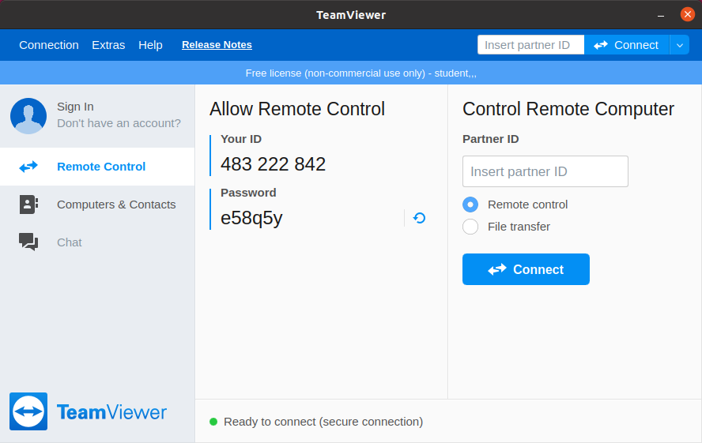
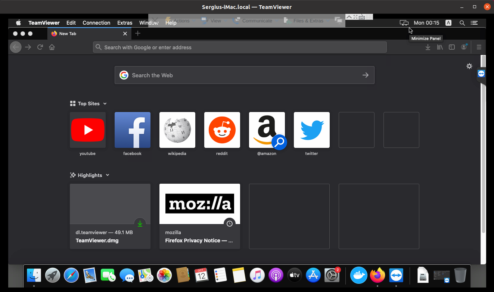

3. Servicii și clienți de rețea¶
Dispozitivele pe care le folosim noi devin din ce în ce mai mici, mai eficiente și ieftine. Asta se întâmplă deoarece multe dintre aplicațiile care până nu de curând rulau pe calculatorul propriu s-au mutat în spațiu online. De exemplu, în loc să descărcăm filme și să le urmărim de pe calculator, folosim o aplicație cum ar fi Netflix pentru a transmite prin Internet filmul pe care vrem să îl urmărim. Un alt exemplu relevant este Google Drive, care ne permite să stocăm, să replicăm și să edităm documente într-o interfață web, în loc să le păstrăm local pe calculatorul pe care îl folosim. Toată puterea de procesare și tot spațiul de stocare s-a mutat de pe calculatorul propriu pe servere aflate în Internet.
Vom numi aceste aplicații care rulează în Internet servicii.
Un serviciu este o aplicație care oferă o funcționalitate utilizatorilor care apelează la ele. Serviciile în domeniul calculatoarelor lucrează folosind paradigma server-client. Un avantaj major al acestei abordări este că reduce puterea de calcul necesară pentru rularea aplicațiilor de către utilizatori. Aceștia au nevoie doar de o aplicație client care știe să comunice cu serverul. Astfel, aplicația client trimite o cerere către aplicația server, serverul primește cererea, procesează cererea și servește răspunsul aplicației client care a făcut cererea.
Această paradigmă poate fi observată în schema următoare:

Atunci când noi vrem să urmărim un film pe Netflix aplicația client Netflix de pe calculator sau smart TV va trimite o cerere de descărcare a filmului de pe serverul Netflix aflat la distanță.
3.1. Clienţi web în linia de comandă¶
În viață de zi cu zi aplicația pe care o folosim cel mai mult este browserul
web, deoarece majoritatea aplicațiilor pe care le folosim au fost transformate
în pagini web cu care noi interacționăm. Browserul web este o aplicație care
execută o cerere HTTP către un server web, identificat printr-o adresă, un link,
prin care face o acțiune și primește un răspuns. De exemplu, când accesăm pagina
www.facebook.com se trimite o cerere către serverul HTTP, iar acesta trimite
un răspuns către browser sub forma unei pagini web, în formatul HTML, pe care
browserul o afișează.
Pentru interacțiunea cu serverele web putem folosi și clienți web în linie de comandă. Clienții web folosiți în linie de comandă sunt folositori atunci când nu avem acces la o interfață GUI, sau când încercăm să automatizăm un proces. De exemplu, pentru a verifica automat starea unui site avem nevoie să descărcăm pagina site-ului.
Există mai multe implementări de clienți web în linie de comandă. Vom folosi
comanda wget pentru descărcarea unei pagini web.
student@uso:~$ wget elf.cs.pub.ro
--2020-10-20 23:01:02-- http://elf.cs.pub.ro/
Resolving elf.cs.pub.ro (elf.cs.pub.ro)... 141.85.227.116
Connecting to elf.cs.pub.ro (elf.cs.pub.ro)|141.85.227.116|:80... connected.
HTTP request sent, awaiting response... 200 OK
Length: 168 [text/html]
Saving to: ‘index.html’
index.html 100%[===========================================================>] 168 --.-KB/s in 0s
2020-10-20 23:01:02 (7,61 MB/s) - ‘index.html’ saved [168/168]
student@uso:~$ cat index.html
<html>
<head>
<meta name="google-site-verification" content="gTsIxyV43HSJraRPl6X1A5jzGFgQ3N__hKAcuL2QsO8" />
</head>
<body>
<h1>It works!</h1>
</body>
</html>
Comanda wget primește ca parametru link-ul către pagina pe care vrem să o
descărcăm.
Am folosit comanda cat pentru afișarea conținutului fișierului
index.html. Fișierul index.html este fișierul descărcat în mod
implicit, dacă nu descărcăm o pagină specifică.
3.1.1. Exercițiu - Descărcarea paginilor web¶
Deschideți într-un editor de text pagina web descărcată pentru a vedea conținutul HTML.
Descărcați pagina web de la adresa
www.facebook.com. Afișați conținutul fișierului descărcat.
Observație:
Clienții web nu sunt folosiți doar pentru accesarea paginilor web. Putem folosi clienți web pentru a descărca fișiere indiferent de tipul acestora.
Descărcați pagina web de la adresa
http://wttr.in/. Afișați conținutul fișierului descărcat.Descărcați fișierul
http://elf.cs.pub.ro/uso/res/final/07-feb/heroes.csv. Ce tip de fișier este acesta?
3.2. Accesul la distanţă în linie de comandă¶
Note
Pentru rularea acestui demo rulați în directorul
~/uso.git/labs/03-user/lab-containers/ comanda ./lab_prepare.sh install ssh.
Pentru a ne conecta la infrastructura pentru această secțiune vom folosi
comanda ./lab_prepare.sh connect ssh
În multe situații atunci când lucrăm cu sisteme, este necesar să rulăm aplicații pe alte stații în afara calculatorului nostru fără să avem acces fizic la stații.
Protocolul cel mai folosit pentru accesul la stații la distanță este protocolul SSH. SSH permite autentificarea la o stație pe care rulează un server SSH. Când ne conecta la o stație, trebuie să precizăm utilizatorul cu care vrem să ne logăm. Pentru autentificare introducem parola utilizatorului, sau folosim o cheie de acces la stație.
3.2.1. Conectarea folosind autentificare cu parolă¶
Pentru a rula comenzi pe o altă stație putem folosi programul SSH (Secure Shell) pentru a ne conecta la acesta în felul următor:
student@uso:~$ hostname
uso
student@uso:~$ ssh root@10.10.10.3
The authenticity of host '10.10.10.3 (10.10.10.3)' can't be established.
ECDSA key fingerprint is SHA256:I3Ybkkk7nF2FjwVHMzjkyujDnhlRlnSwPRVwUKm6OCM.
Are you sure you want to continue connecting (yes/no/[fingerprint])? yes
Warning: Permanently added '10.10.10.3' (ECDSA) to the list of known hosts.
root@10.10.10.3's password:
Welcome to Ubuntu 18.04.5 LTS (GNU/Linux 5.4.0-51-generic x86_64)
* Documentation: https://help.ubuntu.com
* Management: https://landscape.canonical.com
* Support: https://ubuntu.com/advantage
This system has been minimized by removing packages and content that are
not required on a system that users do not log into.
To restore this content, you can run the 'unminimize' command.
The programs included with the Ubuntu system are free software;
the exact distribution terms for each program are described in the
individual files in /usr/share/doc/\*/copyright.
Ubuntu comes with ABSOLUTELY NO WARRANTY, to the extent permitted by
applicable law.
root@ssh:~# ls /
bin boot dev etc home lib lib64 media mnt opt proc root run sbin srv sys tmp usr var
root@ssh:~# hostname
ssh
Unde root este numele utilizatorului și 10.10.10.3 este adresa IP, sau
hostname-ul stației la care vrem să ne conectăm.
Atunci când ne conectăm la o stație, clientul SSH va încerca să autentifice stația la care ne-am conectat. Dacă ne conectăm pentru prima oară la un sistem trebuie să spunem clientului că am verificat datele clientului la care ne-am conectat.
În mod implicit protocolul SSH va folosi autentificarea cu parolă. Parola
introdusă în exemplul de mai sus este parola root.
Odată ce ne-am conectat la calculator, avem acces la un shell în care rulăm
comenzi ca mai sus. Putem observa că ne-am autentificat pe un calculator diferit
deoarece s-a schimbat promptul terminalului de la student@uso:~$ la
root@ssh:~# și s-a afișat un mesaj numit Message of the Day.
În exemplul de mai sus am rulat comanda hostname care afișează numele
stației la care ne-am conectat pentru a ne asigura că ne-am conectat pe un nou
calculator. Putem observa numele stației și din prompt.
3.2.1.1. Exercițiu - Conectarea la distanță¶
Autentificați-vă la stația cu adresa IP
11.11.11.3folosind utilizatorulrootși parolaroot.Autentificați-vă la stația cu adresa IP
12.12.12.3folosind utilizatorulstudentși parolastudent.
Observație:
Atunci când ne conectăm la o stație folosind protocolul SSH este necesar să precizăm un nume de utilizator valid. Dacă utilizatorul nu există, serverul nu va preciza faptul că utilizatorul nu există pe sistem, ci va cere parola utilizatorului, dar nu va permite autentificarea la stație. De ce serverul SSH nu specifică dacă utilizatorul exista sau nu?
3.2.2. Rularea unei singure comenzi prin SSH¶
Atunci când ne conectăm la o stație avem acces la un shell pe care putem să îl folosim, dar dacă nu este necesar putem să rulăm mai multe comenzi, sau vrem să automatizăm rularea comenzilor pe alte stații putem folosi comanda SSH în felul următor:
student@uso:~$ ssh root@10.10.10.3 ip address show
root@10.10.10.3's password:
1: lo: <LOOPBACK,UP,LOWER_UP> mtu 65536 qdisc noqueue state UNKNOWN group default qlen 1000
link/loopback 00:00:00:00:00:00 brd 00:00:00:00:00:00
inet 127.0.0.1/8 scope host lo
valid_lft forever preferred_lft forever
544: eth0@if545: <BROADCAST,MULTICAST,UP,LOWER_UP> mtu 1500 qdisc noqueue state UP group default
link/ether 02:42:0a:0a:0a:03 brd ff:ff:ff:ff:ff:ff link-netnsid 0
inet 10.10.10.3/24 brd 10.10.10.255 scope global eth0
valid_lft forever preferred_lft forever
546: eth1@if547: <BROADCAST,MULTICAST,UP,LOWER_UP> mtu 1500 qdisc noqueue state UP group default
link/ether 02:42:0b:0b:0b:03 brd ff:ff:ff:ff:ff:ff link-netnsid 0
inet 11.11.11.3/24 brd 11.11.11.255 scope global eth1
valid_lft forever preferred_lft forever
550: eth2@if551: <BROADCAST,MULTICAST,UP,LOWER_UP> mtu 1500 qdisc noqueue state UP group default
link/ether 02:42:0c:0c:0c:03 brd ff:ff:ff:ff:ff:ff link-netnsid 0
inet 12.12.12.3/24 brd 12.12.12.255 scope global eth2
valid_lft forever preferred_lft forever
Am rulat comanda ip address show pentru a afișa setările de rețea pe
stația de la adresa IP 10.10.10.3, autentificându-ne ca utilizatorul
root.
3.2.2.1. Execițiu - Rularea unei singure comenzi prin SSH¶
Rulați comanda cat /etc/passwd pe stația de la IP-ul 10.10.10.3 fără să
intrați în interfața în linia de comandă de pe stații. Vă veți autentifica
folosind utilizatorul root și parola root.
3.2.3. Transferul fișierelor la distanţă¶
Pentru a transfera fișiere la distanță folosim scp. Comanda scp
se folosește de protocolul SSH pentru transferul de date între stații, astfel
ne putem folosi de modelul de autentificare de la SSH, ca în comanda de mai jos:
student@uso:~$ scp /bin/bash student@10.10.10.3:~/
student@10.10.10.3's password:
bash 100% 1156KB 30.5MB/s 00:00
student@uso:~$ ssh student@10.10.10.3 ls ~
student@10.10.10.3's password:
bash
Fișierul /bin/bash a fost copiat de pe stația uso pe stația de la adresa IP
10.10.10.3 în directorul home al utilizatorului student. Am rulat
comanda ls ~ prin SSH pentru a verifica că s-a efectuat copierea cu succes.
Trimiterea fișierelor poate fi realizată în orice direcție:
încărcarea fișierelor de la client la server
descărcarea fișierelor de la server la client
Pentru descărcarea fișierelor de pe un server folosim comanda scp:
student@uso:~$ scp root@10.10.10.3:/etc/resolv.conf .
root@10.10.10.3's password:
resolv.conf 100% 38 19.3KB/s 00:00
student@uso:~$ cat resolv.conf
nameserver 127.0.0.11
options ndots:0
student@uso:~$ ssh root@10.10.10.3 cat /etc/resolv.conf
root@10.10.10.3's password:
nameserver 127.0.0.11
options ndots:0
Comanda rulată anterior a descărcat fișierul resolv.conf din directorul
/etc/ de pe stația 10.10.10.3 în directorul curent (.).
3.2.3.1. Exercițiu - Copierea fișierelor la distanță¶
Descărcați fișierul /etc/passwd de la adresa 10.10.10.3 folosind
utilizatorul student și parola student în directorul
/home/student/Downloads.
3.2.3.2. Copierea directoarelor la distanță¶
Pentru copierea unui director folosim opțiunea -r:
student@uso:~$ scp -r ./Downloads/ root@10.10.10.3:~/
root@10.10.10.3's password:
macos.txt 100% 18 4.2KB/s 00:00
index.html 100% 168 168.4KB/s 00:00
teamviewer_15.10.5_amd64.deb 100% 14MB 48.1MB/s 00:00
Comanda anterioară a copiat directorul Downloads și conținutul său din
directorul curent în directorul home al utilizatorului root de la adresa
10.10.10.3.
3.2.3.3. Exercițiu - Copierea directoarelor la distanță¶
Copiați directorul /usr de pe stația de la adresa 10.10.10.3 în
directorul home al utilizatorului curent. Vă veți autentifica pe stația de la
distanță folosind utilizatorul root și parola root.
3.2.4. Conectarea folosind autentificare cu chei¶
În anumite scenarii ne dorim să evităm introducerea parolei pentru autentificarea la o stație la distanță. De exemplu, ne dorim să rulăm aceeași comandă pe 10 stații. Dacă am folosi autentificare bazată pe parolă ar fi nevoie să scriem într-un fișier în clar parola. Aceasta este o problema de securitate, deoarece dacă păstrăm o cheie în format text aceasta poate fi furată de cineva. O alternativă ineficientă este să scriem parola de 10 ori de mână.
Pentru a trece de această problemă putem să folosim mecanismul de autentificare cu chei. Autentificarea cu chei presupune existență a două chei pereche:
cheia privată: este o cheie secretă care este folosită de un client SSH pentru a se autentifica
cheia publică, este o cheie care este copiată pe stația unde este rulat serverul SSH. Cheia este folosită pentru identificarea clienților SSH care se conectează la server.
Cele două chei sunt legate matematic, iar posesorul cheii private să se poată autentifica pe orice sistem unde este disponibilă cheia publică. Câtă vreme posesorul cheii private este singurul care are acces la cheie, nimeni nu se va mai putea autentifica în locul său.
Pentru generarea unei perechi de chei folosim comanda ssh-keygen:
student@uso:~$ ssh-keygen
Generating public/private rsa key pair.
Enter file in which to save the key (/home/student/.ssh/id_rsa):
Enter passphrase (empty for no passphrase):
Enter same passphrase again:
Your identification has been saved in /home/student/.ssh/id_rsa
Your public key has been saved in /home/student/.ssh/id_rsa.pub
The key fingerprint is:
SHA256:mN9IlWoU6bmSA1vvKBSAfAB/Rg9GwTaAhqZ1Kc0vfHM student@uso
The key's randomart image is:
+---[RSA 3072]----+
|=+o**o .. |
|+=++Oo .. . |
|+.o*oo....o |
|. o= =+Eo |
| Bo=S. |
| o ++oo |
| . =o . |
| . . . |
| . |
+----[SHA256]-----+
În procesul de generare a cheilor ni se cere și un passphrase pentru a asigura securitatea cheii private în cazul în care este pierdută, furată sau altcineva are acces accidental la ea. Desigur, uitarea passphrase-ului face cheia nefolosibilă. Așa că passphrase-ul trebuie reținut (și protejat) ca orice altă parolă. Este indicat să nu protejați cheia printr-un passphrase deoarece prezintă aceleași probleme ca folosirea unei parole.
Pentru copierea cheii publice pe o stație folosim comanda ssh-copy-id:
student@uso:~$ ssh-copy-id root@10.10.10.3
/usr/bin/ssh-copy-id: INFO: Source of key(s) to be installed: "/home/student/.ssh/id_rsa.pub"
/usr/bin/ssh-copy-id: INFO: attempting to log in with the new key(s), to filter out any that are already installed
/usr/bin/ssh-copy-id: INFO: 1 key(s) remain to be installed -- if you are prompted now it is to install the new keys
root@10.10.10.3's password:
Number of key(s) added: 1
Now try logging into the machine, with: "ssh 'root@10.10.10.3'"
and check to make sure that only the key(s) you wanted were added.
Este necesar să cunoaștem parola utilizatorului pentru copierea cheii publice.
Atunci când copiem cheia publică, aceasta va fi copiată pentru un singur utilizator. Dacă vrem să ne autentificăm pe același sistem ca utilizatori diferiți fără parola, este necesar să copiem cheia publică pentru fiecare utilizator.
3.2.4.1. Exercițiu - Utilizarea cheilor SSH¶
Generați o nouă cheie SSH de tip RSA cu passphrase-ul
mere.Efectuați modificările necesare astfel încât să vă puteți autentifica drept utilizatorul
studentde pe stația10.10.10.3fără parolă.
3.3. Controlul la distanță în mediul grafic¶
Există anumite tipuri de aplicații care funcționează în mod implicit în mediul grafic și aceste aplicații nu pot fi rulate în interfața în linie de comandă. De exemplu, installer-ul unui joc nu poate să fie rulat din linie de comandă.
Controlul acestor aplicații se poate reduce la două probleme:
controlul întregului desktop;
controlul unei singure aplicații.
3.3.1. Controlul desktopului la distanţă¶
Pentru control complet al unei sesiuni desktop grafice există o mai multe soluții, cum ar fi VNC, sau FreeRDP, dar noi ne vom concentra pe soluția numită TeamViewer, deoarece oferă suport pentru toate sistemele convenționale.
TeamViewer poate fi descărcat de la această adresă și permite autentificarea la o mașină folosind un ID și o parolă generate de aplicația server.
3.3.1.1. Recapitulare - Instalarea aplicației TeamViewer¶
Descărcați și instalați aplicația TeamViewer pe mașina virtuală USO și pe
stația voastră fizică.
3.3.1.2. Folosirea TeamViewer¶
Pentru a ne conecta la o mașină la distanță avem nevoie de ID-ul mașinii și parola conexiunii. Aceste informații se găsesc în primul ecran al aplicației TeamViewer, cum se vede mai jos.
Vom scrie ID-ul stației la care vrem să ne conectăm în câmpul Partner ID de
pe calculatorul de pe care vrem să ne conectăm (stația client).
După ce apăsăm tasta Enter apare promptul pentru parolă, unde completăm
parola stației la care vrem să ne conectăm.
După ce am introdus parola a apărut pe ecran desktop-ul mașinii la care am vrut să mă conectez. În cazul de față este vorba de un sistem MacOS pe care am rulat TeamViewer.
Deasupra cadrului în care apare desktop-ul de la distanță apar butoane ce ne permit să închidem conexiunea, sau să trimitem acțiuni și fișiere către calculatorul server.
3.3.1.3. Exercițiu - Conectarea la distanță folosind TeamViewer¶
Conectați-vă la mașina virtuală USO de pe stația voastră fizică.
3.3.2. Controlul unei ferestre la distanţă¶
Pentru controlul unei ferestre în Linux putem să folosim protocolul SSH pentru transferul datelor care ar fi afișate pe stația pe care funcționează aplicația grafică pe stația pe care este lansat clientul SSH.
Acest mod de transfer nu este rapid, deoarece transferul se face printr-un protocol care nu este menit pentru aplicații care au nevoie să fie responsive, cum sunt ferestrele interactive, dar pot fi folosite pentru aplicații cum ar fi kituri de instalare ale programelor.
Pentru a porni o aplicație grafică pe un calculator la distanță trebuie să ne
conectăm la această stație folosind opțiunea -X a comenzii ssh.
Pentru a rula browserul firefox pe stația de la adresa 10.10.10.3, ne-am
conectat la aceasta folosind comanda ssh cu opțiunea -X și am pornit
aplicația ca și când am porni-o local.
Observație:
Nu putem să preluăm controlul unei aplicații dacă aceasta a fost pornită deja pe stația de la distanță, deoarece putem doar sa primim semnalul video pentru aplicații nou pornite.
3.3.2.1. Exercițiu - Controlul une ferestre la distanță¶
Deschideți aplicația grafică qbittorrent ca utilizatorul student pe
stația 10.10.10.3.
3.4. Securizarea conexiunii la Internet folosind un VPN¶
Note
Pentru rularea acestui demo rulați în directorul
~/uso.git/labs/03-user/lab-containers/ comanda ./lab_prepare.sh install vpn.
Pentru a ne conecta la infrastructura necesară acestei secțiuni, vom folosi
comanda ./lab_prepare.sh connect openvpn-client1 pentru stația
openvpn-client1 și ./lab_prepare.sh connect openvpn-client2 pentru a vă
conecta la stația openvpn-client2.
O aplicație de tip VPN (Virtual Private Network) este o aplicație care permite crearea rețelelor de calculatoare în Internet fără ca acestea să fie neapărat în aceeași rețea fizică.
Funcționalitatea unui VPN este încapsularea datelor trimise de către un calculator, criptarea și trimiterea lor către un server care le va trimite mai departe către destinație.
Primul avantaj al folosirii unui VPN este “ascunderea” traficului între client, adică stația de pe care se trimit datele și serverul VPN-ului. Astfel, acestea nu mai pot fi văzute de alte entități până când ajung la serverul VPN.
Al doilea avantaj al VPN-urilor este interconectarea facilă între calculatoare care se află în rețele private diferite. De exemplu, pentru a juca un joc în LAN, putem folosi un VPN, cum ar fi Hamachi [1] , la care se conectează doi utilizatori. Serverul de VPN va primi datele de la clienți și le va trimite mai departe dintr-o rețea privată în alta.
<insert diagramă>
3.4.1. Recapitulare - Identificarea adreselor IP ale interfețelor¶
Identificați adresele IP configurate pe interfețele stațiilor
openvpn-client1 și openvpn-client2.
3.4.2. Recapitulare - Verificarea conexiunii între două stații¶
Verificați conectivitatea între cele două stații folosind adresele IP identificate mai sus.
Observație:
Nu există conectivitate între cele două stații, deoarece acestea se află în rețele private diferite.
Pentru a porni VPN-ul, vom folosi comanda openvpn. Rulați următoarea comandă
pe ambele stații pentru a porni clientul de VPN:
root@openvpn-client1:~# openvpn --config ./openvpn-client1.ovpn --daemon
root@openvpn-client1:~# ip address show
1: lo: <LOOPBACK,UP,LOWER_UP> mtu 65536 qdisc noqueue state UNKNOWN group default qlen 1000
link/loopback 00:00:00:00:00:00 brd 00:00:00:00:00:00
inet 127.0.0.1/8 scope host lo
valid_lft forever preferred_lft forever
3: tun0: <POINTOPOINT,MULTICAST,NOARP,UP,LOWER_UP> mtu 1500 qdisc fq_codel state UNKNOWN group default qlen 100
link/none
inet 192.168.255.6 peer 192.168.255.5/32 scope global tun0
valid_lft forever preferred_lft forever
45: eth0@if46: <BROADCAST,MULTICAST,UP,LOWER_UP> mtu 1500 qdisc noqueue state UP group default
link/ether 02:42:0a:0a:0a:0f brd ff:ff:ff:ff:ff:ff link-netnsid 0
inet 10.10.10.15/24 brd 10.10.10.255 scope global eth0
valid_lft forever preferred_lft forever
root@openvpn-client2:~# openvpn --config ./openvpn-client2.ovpn --daemon
root@openvpn-client2:~# ip address show
1: lo: <LOOPBACK,UP,LOWER_UP> mtu 65536 qdisc noqueue state UNKNOWN group default qlen 1000
link/loopback 00:00:00:00:00:00 brd 00:00:00:00:00:00
inet 127.0.0.1/8 scope host lo
valid_lft forever preferred_lft forever
2: tun0: <POINTOPOINT,MULTICAST,NOARP,UP,LOWER_UP> mtu 1500 qdisc fq_codel state UNKNOWN group default qlen 100
link/none
inet 192.168.255.10 peer 192.168.255.9/32 scope global tun0
valid_lft forever preferred_lft forever
47: eth0@if48: <BROADCAST,MULTICAST,UP,LOWER_UP> mtu 1500 qdisc noqueue state UP group default
link/ether 02:42:0b:0b:0b:0f brd ff:ff:ff:ff:ff:ff link-netnsid 0
inet 11.11.11.15/24 brd 11.11.11.255 scope global eth0
valid_lft forever preferred_lft forever
Observăm că a apărut o nouă interfață de rețea în sistem care nu are o componentă
fizică. Adresa IP setată pe această interfață este adresa care identifică
stațiile în rețeaua VPN-ului. Observați că ambele adrese de pe interfețele
tun0 sunt foarte similare. Asta înseamnă că cele două stații sunt acum în
aceeași rețea virtuală
3.4.3. Recapitulare - Verificarea conexiunii între două stații¶
Testați conectivitatea de pe stația openvpn-client1 cu stația
openvpn-client2. Folosiți adresele IP configurate pe interfețele tun0 de
pe fiecare stație.
3.4.4. Modificarea drumului prin care trec datele¶
Pentru a valida că datele chiar trec prin VPN, rulăm comanda
traceroute 8.8.8.8 și observăm că mesajele spre Internet nu trec prin
interfața eth0. Mesajele trec prin interfața tun0, ajung la serverul VPN
identifiat prin adresa 192.168.255.1 în pasul 1, iar abia apoi sunt lansate
mai departe spre Internet.
root@openvpn-client1:~# traceroute 8.8.8.8
traceroute to 8.8.8.8 (8.8.8.8), 30 hops max, 60 byte packets
1 192.168.255.1 (192.168.255.1) 6.033 ms 6.031 ms 5.881 ms
2 10.10.10.253 (10.10.10.253) 8.582 ms 8.447 ms 8.306 ms
3 10.0.2.2 (10.0.2.2) 8.165 ms 8.031 ms 7.808 ms
4 * * *
5 * * *
6 r-c3550-l3-vlan11.bucharest.roedu.net (141.85.0.65) 8.308 ms 5.578 ms 4.876 ms
7 172.31.255.93 (172.31.255.93) 4.681 ms 6.882 ms 6.855 ms
8 po-23.acc1.buc.roedu.net (37.128.225.225) 16.711 ms 16.151 ms 16.751 ms
9 bu-13.core2.buc.roedu.net (37.128.232.177) 9.248 ms 9.268 ms 9.232 ms
10 hu-0-0-0-0.core3.nat.roedu.net (37.128.239.101) 8.510 ms 8.466 ms 6.542 ms
11 te-0-6-0-1.peers1.nat.roedu.net (37.128.239.42) 6.347 ms 5.894 ms 5.987 ms
12 google.interlan.ro (86.104.125.129) 31.665 ms 31.614 ms 31.529 ms
13 108.170.252.65 (108.170.252.65) 31.506 ms 108.170.251.193 (108.170.251.193) 31.146 ms 108.170.252.1 (108.170.252.1) 31.591 ms
14 172.253.73.153 (172.253.73.153) 31.795 ms 74.125.37.197 (74.125.37.197) 30.256 ms 74.125.37.167 (74.125.37.167) 30.068 ms
15 dns.google (8.8.8.8) 29.710 ms 34.122 ms 30.538 ms
Astfel, datele care se vor îndrepta spre o destinație pot să depășească anumite filtre bazate pe locație, deoarece locația de unde provin va fi înlocuită de serverul VPN.
Aceasta a fost o demonstrație a modului de lucru folosind openvpn în linie
de comandă pentru configurarea unui VPN folosind fișiere de configurare. Aceasta
nu este singura metodă de conectare la VPN, există implementări diferite, cum ar
fi WireGuard [2] sau Cisco AnyConnect[#AnyConnect]_ care oferă același
serviciu dar implementat în mod diferit, oferind interfață grafică sau un mod
facil de configurare.
Notă de subsol